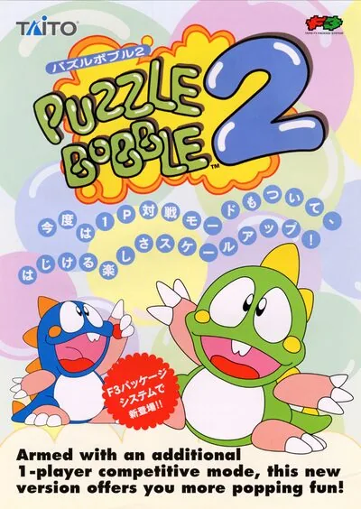

FBA (FinalBurn Alpha)
Bubble Bobble II
- Año: 1994
- Desarrollador: Taito Corporation Japan
- Género: Plataformas / Correr y saltar
- Jugadores: 4 jugadores
Bubby, Bobby y sus buenas amigas Kulun y Coron encuentran un libro mágico. Lo que ellos no sabían era que ese libro tenía un secreto... Hace mucho tiempo, cuatro viejos confinaron al malvado Hyperdrunk en el libro. Cuando Bubby, Bobby y sus amigas empiezan a leer el libro, liberan a Hyperdrunk, quien los transforma en dragones de burbuja y los atrapa en el mundo del libro mágico. ¿Podrán salvarse a sí mismos y regresar al mundo normal?
PERSONAJES - Bubblun: Es el más equilibrado de los cuatro. De color verde; puede lanzar tres burbujas a la vez hacia adelante.
- Bobblun: El más rápido de los cuatro, en cambio el alcance de sus burbujas es corto. De color azul; puede lanzar tres burbujas a la vez que se dispersan.
- Kululun: Es la que lanza las burbujas más lejos de los cuatro, pero es lenta. De color naranja, con un lazo verde en la cabeza; puede lanzar tres burbujas a la vez en forma de T.
- Cororon: Es la que lanza las burbujas más rápido. De color rosa, con un lazo morado en la cabeza; puede lanzar tres burbujas a la vez en forma de T invertida.
MODO DE JUEGO El objetivo del juego es vencer a Hyper Drunk, llegando al mundo secreto y volver a la forma humana. El juego consta de 164 niveles, incluyendo 18 niveles de jefe, pero en una partida normal, lo máximo que se pueden jugar son 58, si se accede a la zona final secreta. En cada ronda hay un número de enemigos que hay que vencer. Cuando todos los enemigos de un nivel son destruidos, se pasa al siguiente nivel. Cada 10 niveles, sale un jefe al que hay que derrotar para pasar a la siguiente zona. Las zonas son temáticas y están basadas en diversos juegos de Taito. Al vencer a un jefe, aparecen dos puertas a elegir, donde cada una lleva a una zona diferente, así, el jugador puede elegir el camino que desea seguir.
En cada zona, a lo largo de sus niveles/rondas, hay escondidos unas notas musicales de color, que pueden ser rojas, azules, verdes o naranjas. Si consigues correctamente tres notas del mismo color, aparecerá una llave gigante del color correspondiente a las notas recogidas. Si se consiguen las 4 llaves gigantes de colores, tras vencer al jefe de la ronda 48, se abre con las llaves una puerta dorada con cuatro cerraduras. Usando esa puerta se accede a la última zona, donde al final de la misma, en la ronda 58, el jugador se enfrenta a una marioneta de Super Drunk y luego al propio Hyper Drunk. También, en ciertos niveles del juego, si se espera a que aparezca la frase "Hurry up!", la cual indica que estás tardando demasiado en destruir a los enemigos del nivel, aparecen momentáneamente unas burbujas transparentes con una letra en el interior, que puede ser una R, una O, o una D. Si se consigen las tres letras y se forma la palabra ROD, en el nivel en el que se complete la palabra, aparecerá un bastón mágico girando, emitiendo una luz. De repente al jugador le envolverá un escudo de luz azul, para posteriormente devolver al personaje a su forma humana, pudiendo seguir lanzando burbujas pero esta vez con un tubo.
El verdadero y mejor posible final del juego se consigue al derrotar a Hyper Drunk con los personajes en su forma humana en el modo de juego "Super".
Controles
Dos botones (no usa Y ni X).
| Panel | Juego |
|---|---|
 | Botón 1 |
 | Botón 2 |
 | Moneda |
  | Empezar |
+  | Salir del juego |
El panel en FBA (FinalBurn Alpha)

Longplay

Partida completa de la recreativa (38 min), de Paul Eales: Bubble Bobble II (バブルボブルII). [Arcade - Taito]. (1994). Cororon. ALL..